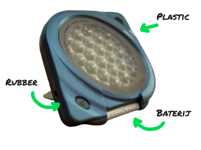

Toegevoegde waarde
Ik ga de toegevoegde waarde van Retourgoederen uitleggen aan de hand van een voorbeeld. In het voorbeeld wordt er een lamp geretourneerd. Dit is een speciale lamp waarmee mensen in de ochtend wakker worden bij gebrek aan zon licht. Deze lamp is voornamelijk gemaakt van plastic en rubber. Daarnaast heeft de lamp ook een accu. Als je dit zou vernietigen krijg je hiervoor € 1,20 per lamp. Daarnaast zijn de resources die ingezet zijn om deze lamp te maken weggegooid want de lamp kan niet meer gebruikt worden. Retourgoederen voorkomt dat dit soort producten worden vernietigd door deze producten voor een goede prijs op te kopen. Retourgoederen heeft deze lamp bijvoorbeeld voor € 2,30 opgekocht. Vervolgens is de lamp gecontroleerd en opnieuw aangeboden voor €4,30. Retourgoederen zorgt er dus voor dat geretourneerde producten worden hergebruikt waardoor er zo min mogelijk resources worden weggegooid.